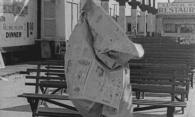

Intro
Never before have we (humans) lived in a period where news & information is so accessible.
Accessible for reasons that new code-driven technologies bring factors of quantity, allowance and inexpensiveness to all peoples, regardless of their age, gender, race or views.
These technologies directly influence the kind of news & information that is being produced for the average person, and it is this correlation that I personally find interesting.
So lets take a brief look at the past, present and future of personal news deliverance from two angles; Content & Interface.
A little about me...ü뮂Äçüè´
For a bit of context, this is how I get my news:
Primary
Secondary
With the rise in accessibility, comes an increase in media-options & sheer amount of content — content that is not necessarily true, useful or of quality.
My personal interest in this topic somewhat stems from an early distrust in most media platforms. But, it is from this caution, comes a drive to seek out quality, curated content that meets my personal needs on a bunch of different levels. I may not necessarily represent the majority, but I do represent a demographic who seek out curated and personalised news.
The recent past

Interface: Paper
Content: ‘Current Affairs’
To view how technology has changed the way we receive news, it’s best to first look from where we have come.
Before mobile screens arrived in my lifetime, the primary vehicle of current-news was the physical newspaper, and niche material was primarily delivered by magazines.
The info being brought to people was a whole lot more centralised and designed to engage the masses. The reader would rely on content coming from 2-3 main sources, in Melbourne’s case this was mostly coming from The Age and The Herald Sun, for example.
The plastic wrapped & rolled newspaper would be hurled onto your front lawn every morning for $1 a day* — this was your primary subscription service.
*After interviewing Mum, she mentioned in the 90’s she paid roughly $1 per paper whereas now she pays $21 per month for The Age’s online subscription.
Next
Interface: Television
Content: Widespread, attention-grabbing
Next to rule was free-to-air TV in which brought a whole new method of receiving content. This interface allowed for the first time live-material in audio and video form to be beamed into the homes of people, spawning endless creative and disruptive possibilities.
The concept of ‘breaking news’ was normalised, and additionally, more alternative genres of news began to become available.
As the TV developed from analouge to digital, the user began to have much more control over how they accessed their news, with features such as recording, pausing and saving their media of choice.
But even still, this information was still limited to specific locations to where a television set was housed.
At this point, a persons news-journey may look something like this:
Newspaper —> TV —> Car Radio
While the same story would likely be seen/heard on the different mediums, it was not necessarily one cohesive experience.
With the smartphone, however, that all changed.
Note:
It is worth noting that according to Statista Research Department, TV still leads the charge of the way Australian people consciously access the news. However, this is of course dropping and it does not account for news people unconsciously take it (scrolling on social media, emails ect.)